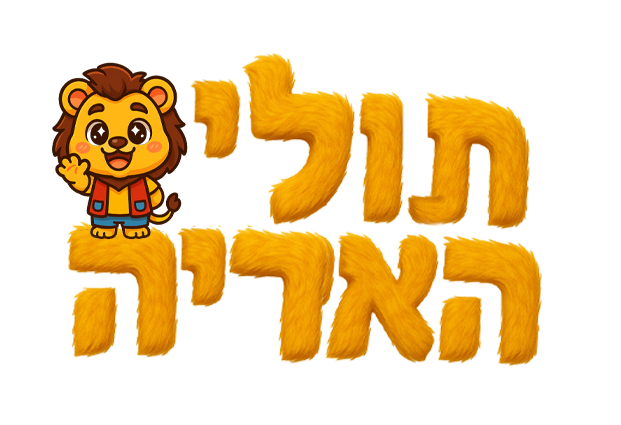

תולי האריה

תולי הוא אריה קטן עם לב גדול ושאגה עוד יותר גדולה. ביחד עם פוקס השועל והופ הארנבת הוא שומר על עיר החלומות, פותר בלאגנים, שר, רוקד, ומלמד את הילדים דברים חדשים בכל פרק.
החבורה
לכל אחד יש כוח משלו, וביחד הם מנצחים כל בלאגן.
ההופעה החיה של תולי
תולי, פוקס והופ על הבמה, עם שירים, ריקודים והרבה שאגות. להזמנת הופעה
מה יש בעולם של תולי
3
עונות של הסדרה
פרקים מצוירים באיכות סדרה בינלאומית. עונה 3 בדרך, עם ריינג'רים, עיר החלומות וסוד גדול על טייגר.
A-Z
תולי מלמד אנגלית
אות אחת בכל פרק קצר, מילה אחת, ומשחק של "עכשיו אתם". הדרך הכי כיפית להכיר את ה-ABC.
♪
שירים וקליפים
"חברים", "כולם ביחד" ועוד שירים שהילדים שרים בגן. קליפים עם מילים על המסך לשירה משותפת.
2
משחקים עם תולי
המירוץ לפסגה והמירוץ לממלכה, ותולי מופיע גם במיני פייטר ובפלישת הוירוסים. לכל המשחקים.
הסדרה: תולי האריה וחבריו הנהדרים
כל הפרקים לפי עונות, מהפרק הראשון. לחצו על פרק, ובסוף כל פרק מחכה הבא.